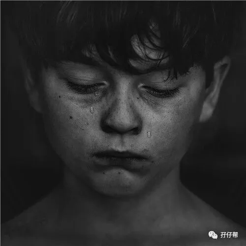
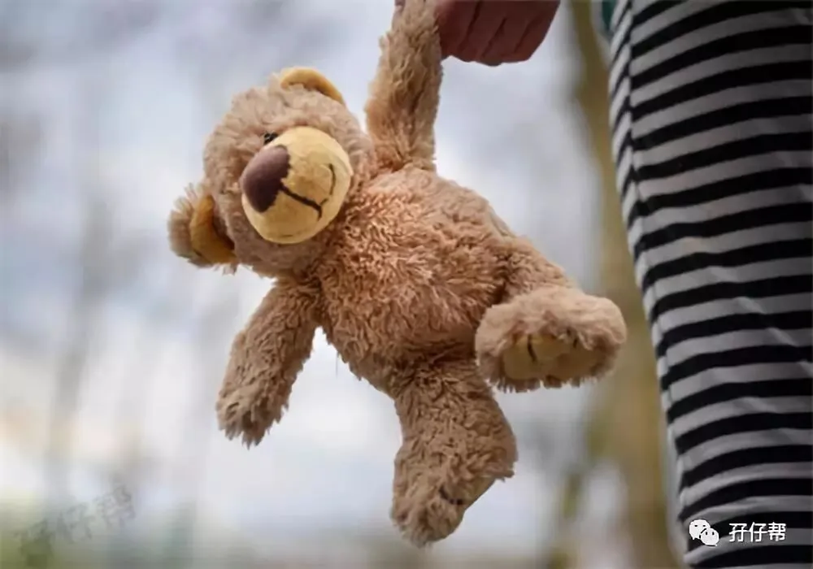
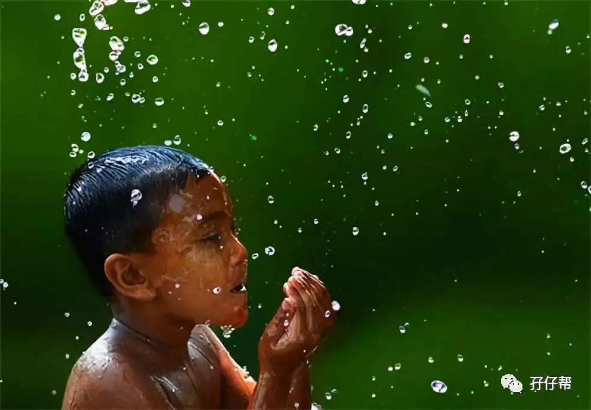
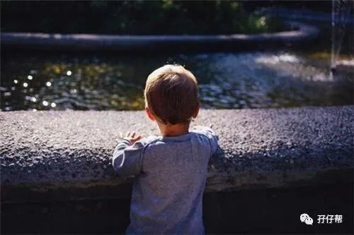
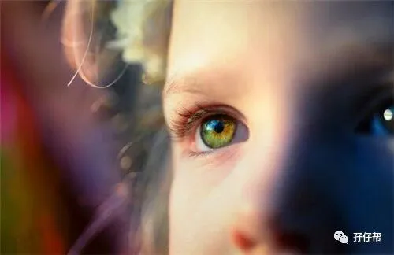
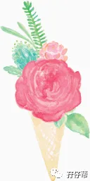
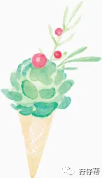

01
“妈妈，我要牵！”
“妈妈，等等我…”
“妈妈，我走累了！”
“妈妈，你说话…”
不管我怎么哭泣，哀求，妈妈依然不看我，不跟我说话，不牵我的手。
爸爸也不理我了。
平时，爸爸会在公园的健身器材那里，用双手顶住我的屁股，让我抓住高高的杆子，然后我就像个小男子汉一样，抓住杆子，在半空中飞…
我喜欢那样玩，真的好酷！
可是今天怎么了？
妈妈和爸爸为什么今天突然间都不理我了，不陪我玩了。
我好伤心，好委屈！我到底做错什么了？
我只是起床的时候磨蹭了下而已。
我喜欢睡醒了躺在床上看落地窗外的风景，然后自言自语，我觉得挺好玩的。
有时候我也会跟圈圈一起趴在床上说会话，说一些只有我们双胞胎哥俩才听得懂的话！可是今天圈圈早早就起床了，都没叫我。
这几天，爸爸和妈妈每天早晨都会带着我和圈圈去公园锻炼身体，我喜欢跟着爸爸妈妈去公园，可是我不喜欢跑步，跑几步就累了。我只想拉着妈妈的手，慢慢地走。
我们已经坚持了一个星期了，每天我和圈圈就这样被催促着：“快点拉…”“请快点…” “再不快点就不等你了….”
02
我起床后看到沙发上有一本书《我是霸王龙》，那是我找了好久的书。 于是，我就坐在沙发上看了一会儿书，忘记去刷牙洗脸了。
这时我看到爸爸拿着我的漱口杯和牙刷准备往垃圾桶里扔，我着急了，我知道爸爸肯定会来真的。
因为爸爸在我起床后，催了我好几次去刷牙，我忙着看书没听到，他肯定是生气了吧！
我只好把书放下，把漱口杯夺过来，先刷牙再说吧！
我刷了几下，就把水倒掉了，可是被妈妈发现了，她很大声地训斥我没有认真刷牙，要我重新刷一遍。
可是我太想看那本书了，只是刷牙而已，大不了晚上刷干净点了，妈妈干嘛那么凶。
于是我没有听妈妈的话，嬉皮笑脸地出去客厅了。
我突然间不想看那本书了，因为我发现客厅还有很多玩具可以玩，我拿起一个托马斯玩具小火车，趴在地上玩…
过了一会儿，我看到圈圈在喝牛奶，我也想喝，可是被妈妈抢走了，并再次催我重新刷牙才能喝。
我不，我就是要现在喝。我想要拿回来，可是妈妈把我推开了，
我不喜欢被人这样推，即便那个人是妈妈，我一生气就随手要打妈妈。
妈妈反应很快，躲开了，我没打着。
我更生气了，非要打到妈妈不可。我一定要打痛妈妈，让她哭。
有时候妈妈会随便我打她，然后做出哭的表情，那样我会很高兴，心情好了就会饶过她。
可是今天妈妈不让我打她了，还说要反抗，并告诉我，被打了就要反抗。
03
这时圈圈开着扭扭车过来，我不想跟妈妈计较了。反正打不过妈妈，还是跟圈圈玩扭扭车吧。
过了一会儿，我又听到他们的催促声，等我反应过来，发现妈妈和爸爸居然拉着圈圈要出门，不等我了。
我开始着急了，大哭，想要阻止他们。
我没有其他办法了，只能哭，有时候哭这一招还是挺管用的，虽然有时候又不管用。
经过我的一番哭闹，爸爸和妈妈愿意等我，可是他们都不过来帮我倒水刷牙。
我不够高，够不着去餐桌上倒水，我担心我太慢他们不等我，我一着急又哭了，爸爸终于给我倒了杯水，并帮我挤牙膏。
这一次，我很努力很认真地刷牙。
我把漱口杯和牙刷放回原处，兴冲冲地跑到妈妈面前，长开嘴巴：“妈妈，你看，我的牙齿白白的！”
每次我刷完牙，妈妈都会夸奖我，说我的牙齿刷的好白好干净，然后会在我额头用大拇指印一个大大的赞。
我非常喜欢得到妈妈的表扬和点赞。
可是这一次，妈妈很冷漠，还说我的牙齿一点都不白，还看到小细菌在上面爬来爬去，并告诉我不认真刷牙就是这样的后果。
我很委屈，我明明很努力地刷牙了，为什么妈妈还说我的牙齿不白，不干净，还有小细菌。我害怕像那只小熊那样，牙齿全部消失了（经常看的一本绘本《我不刷牙》）
我又哭起来了。
爸爸和妈妈都不过来安慰我，很冷漠地坐在沙发上看我哭，还一直催促我快点。我只是想要抱抱安慰下而已，有那么难吗？
爸爸好像受不了我哭，这一招对爸爸比较受用。他最后过来帮助我换好衣服，端了牛奶给我喝。
终于准备好了，我笑眯眯地站在妈妈面前让她牵着我下楼梯，就像往常一样，扶着妈妈的手臂来个青蛙三级跳，很酷，很好玩！
可是妈妈一直面无表情，拒绝牵我下楼梯。我着急地追上去，不小心崴到脚，疼得我直掉眼泪。
04
从出门去公园，再从公园回到家，不管我怎么哀求，妈妈只牵着圈圈的手，全程都对我不闻不问。
我担心他们会丢下我，只剩下我一个人，会被大灰狼叼走的。甚至过马路的时候，只有爸爸过来牵着我。
我不要爸爸牵，我要妈妈牵。
每次过马路都是爸爸牵着圈圈，妈妈牵着我，我喜欢被妈妈牵，她总是拽着我的手，紧紧的，让我特别有安全感。
以前那个抱着我又亲又抱对着我笑的温柔妈妈哪里去了，我想要那个妈妈。
我喜欢跟妈妈说话，喜欢听妈妈的声音，她平时会跟我讲很多话，说路上遇到的小狗，小鸟，还有地铁…还会给我唱英文歌。
可是她现在只跟爸爸和圈圈说话，不搭理我。我好怕！怕来来往往的车，也怕妈妈不要我了。
我哀求她说话，可是妈妈依然不理我，路上好多叔叔阿姨都很奇怪地看着我哭。
回到家吃完早餐，爸爸提醒我，因为我今天表现不好惹妈妈生气了，爸爸让我跟妈妈道歉认错。
虽然我还是不清楚我错在哪里了，但是只要妈妈不生气，肯跟我讲话，我愿意认错，就是说对不起而已。
我跑到妈妈面前很认真地说：“妈妈，对不起。我下次会表现好。”
妈妈听到我的道歉终于跟我说话了，还说了很多，叫我以后不能磨蹭，要有团队意识，要听从指挥…我虽然没听懂，不过还是很高兴，妈妈终于跟我讲话了。
至于刚才发生了什么事情，我好像也忘记了。
我继续玩托马斯了。
...
05
这是我模仿圆圆的语气，猜测他的内心世界写的文章。至于是不是这样的内心世界，得等他长大看完后，才能解开谜底了。呵呵…
前几天，为了迎接开学季的到来，做好入园准备，培养圆圈早睡早起的作息习惯，我和圆圈爸每天早晨带着他们去公园跑步。
在这7天的训练里，圆圆的表现非常不好，拖拉，磨蹭,没有团队意识。 这个经常爱跟我们唱反调的小屁孩，分分钟可以把人逼得神经病和正常人之间秒切换。
我知道现在跟他们谈“团队意识”“集体精神”等于“鸡同鸭讲”，但是他们拖拉磨蹭的习惯实在让人忧心忡忡。
孕期的时候，我每天掰着手指头盼卸货并暗暗发誓，卸货之后，天高任鸟飞，老娘就可以浪里个浪。
现在，我只想把他们塞回肚子里面去，18岁之后再出来。
因此，每次孖仔帮的孕期群有宝妈说孕期很无聊，很煎熬。
我马上给她们“灌鸡汤”：双胎孕期才是养育双胞胎过程中最轻松最快乐的美好时光，对双胞胎孩子的教育才是水深火热的开始！
啊，多么痛的领悟！
为人父母，修行一场，任重道远。
而我们作为双胞胎父母，任重道远乘以2！
圆圆的这一篇内心独白的文章，我的文思如尿崩一样，一口气写出来了，实在太多感慨了。
写完之后，发现自己格外丑陋！
天呐！我对自己的儿子做了什么…他究竟做错什么了，我居然那样对待他！
小孩子的内心世界没有那么复杂，我们做父母的总习惯用自己的思维强加在他们身上，当孩子没有做好的时候，要么对孩子暴打一顿，要么冷面冰霜地对待…
这些都是不可取的！
我那样对待圆圆的磨蹭就是冷暴力教育的典型例子。
希望借此文，时刻督促自己，万不可被不良情绪囚禁了我的母爱！
1
END
1
本文系圆圈妈sgguy-com原创，来源于孖仔帮，专注双胞胎孕期育儿经验分享，著作权归孖仔帮所有。
关注我们
公众号ID：babytwins-mummy
孖仔帮
与您分享双胞胎育儿路上的囧人囧事
近日发现有些平台未经允许转载了圆圈妈的文章，在此声明下：
若喜欢圆圈妈的文章，无条件欢迎大家分享转发到朋友圈，如需转载至公众号请联系圆圈妈（微信sgguy-com）授权，或扫以下微信二维码。
各位双胎妈妈，更多孖仔帮原创育儿文章请猛戳 "阅读原文" ，或者直接上圆圈妈的个人博客，大把双胎孕期育儿心得经验分享。
阅读原文：
https://www.sgguy.com/twinsbang






